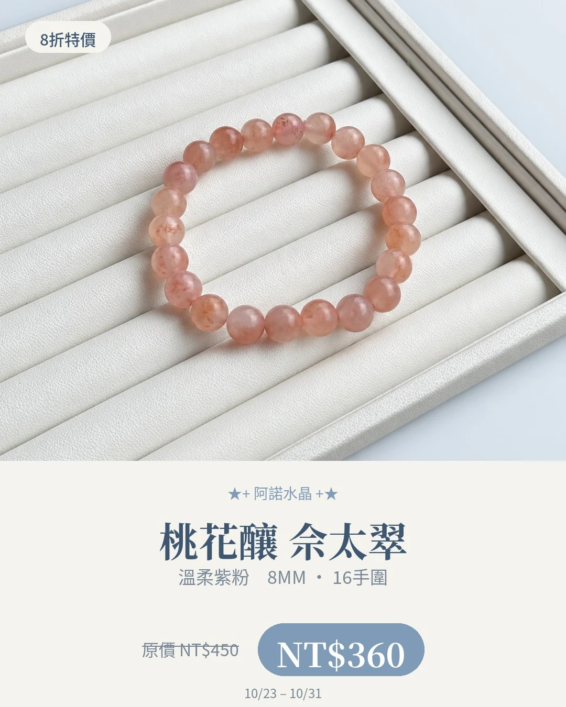

產地與礦物結構
產地背景
佘太翠相關研究的樣品來自中國內蒙古大佘太地區；不代表這串已完成產地鑑定。
礦物結構與名稱
研究顯示，不同色系佘太翠的主要礦物可不同，部分以石英為主，白色品種也可能以白雲石為主。本款精確成分與致色物未確認。
本頁產地是礦種資料中的產出紀錄，不代表照片中商品已完成產地鑑定；原料產地、加工地與販售地是不同資訊。
故事、寓意與日常陪伴
桃花的意境可以代表對生活的期待與珍惜，也可以單純因為喜歡這個顏色而佩戴。
以上為文化寓意或配戴心情，不代表實際功效。
適合怎麼搭配？
配米白棉麻、淺粉或簡單素色衣服，讓溫柔的珠色留在視線中央。
日常保養
避免撞擊、化學清潔及浸泡；不以日常佩戴後的顏色變化宣稱成分或品質改善。
看完整保養指南 →官網上的 桃花釀 佘太翠 款式
沿用商品原名稱與照片；售價、庫存及服務依賣場最新資訊確認。
礦石寓意與能量相關內容整理自網路資料，僅供介紹參考，並非科學功效或效果保證。